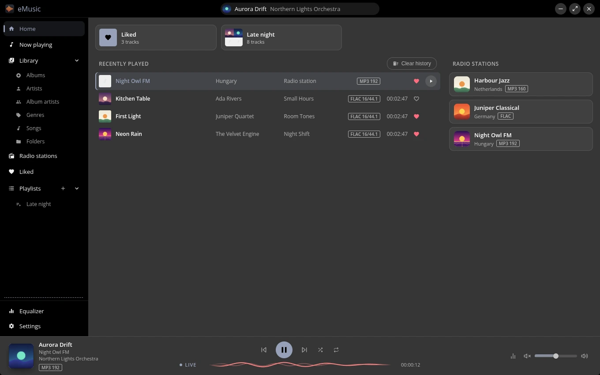
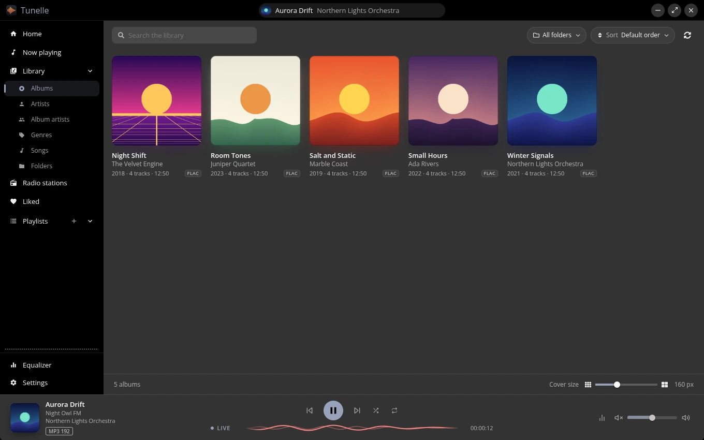
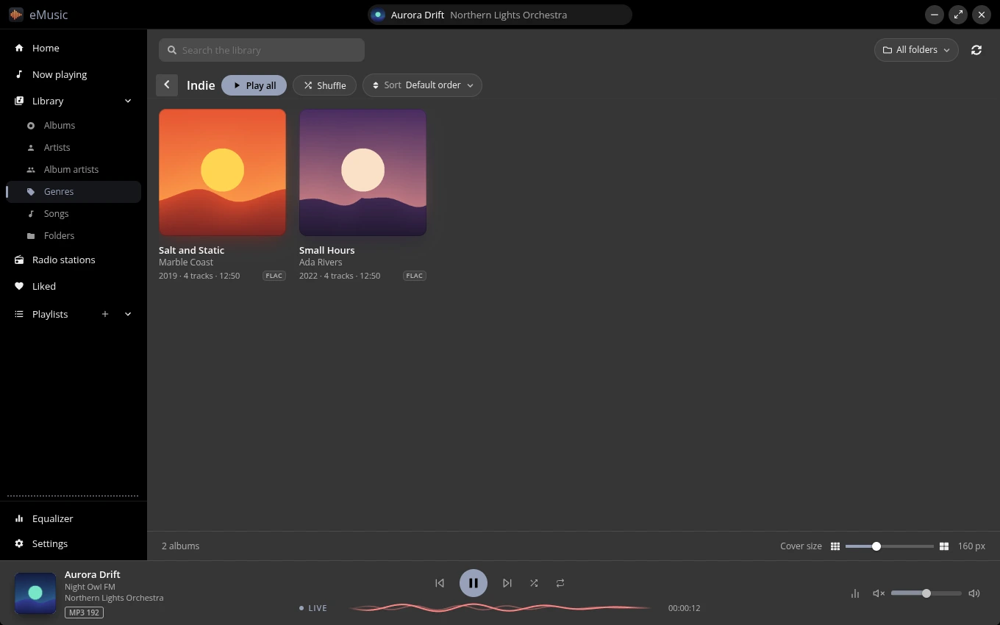
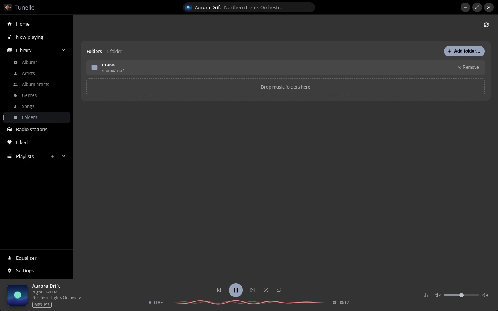
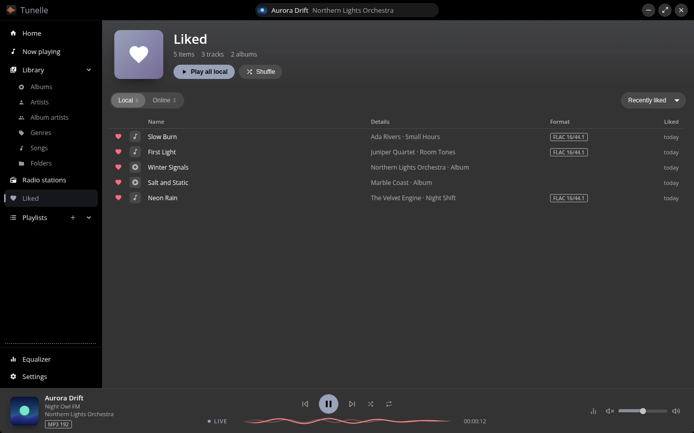
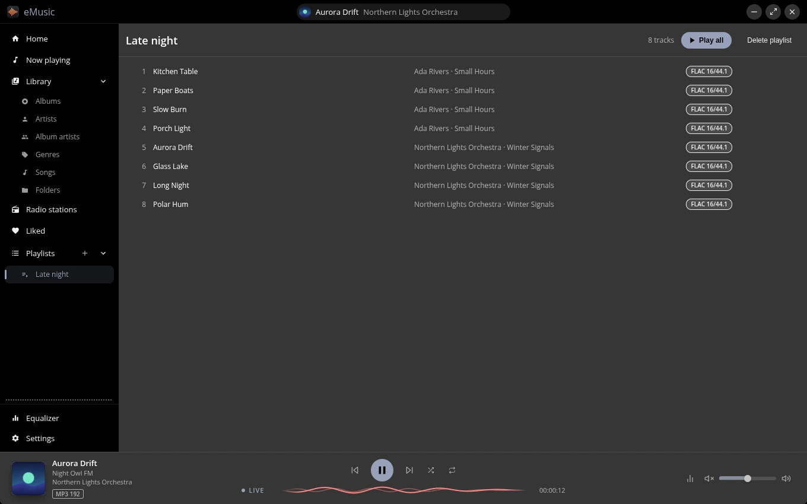
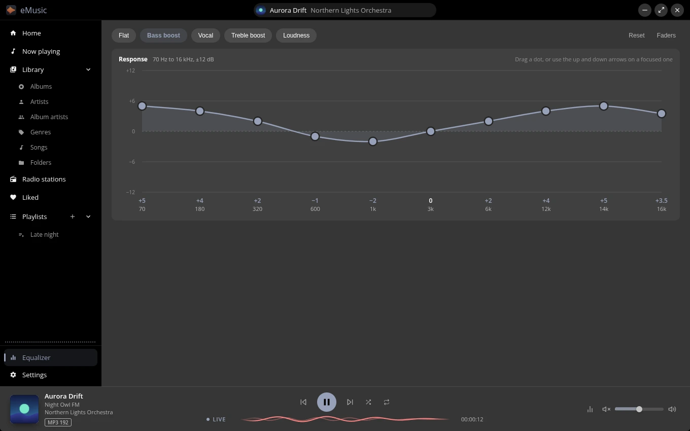
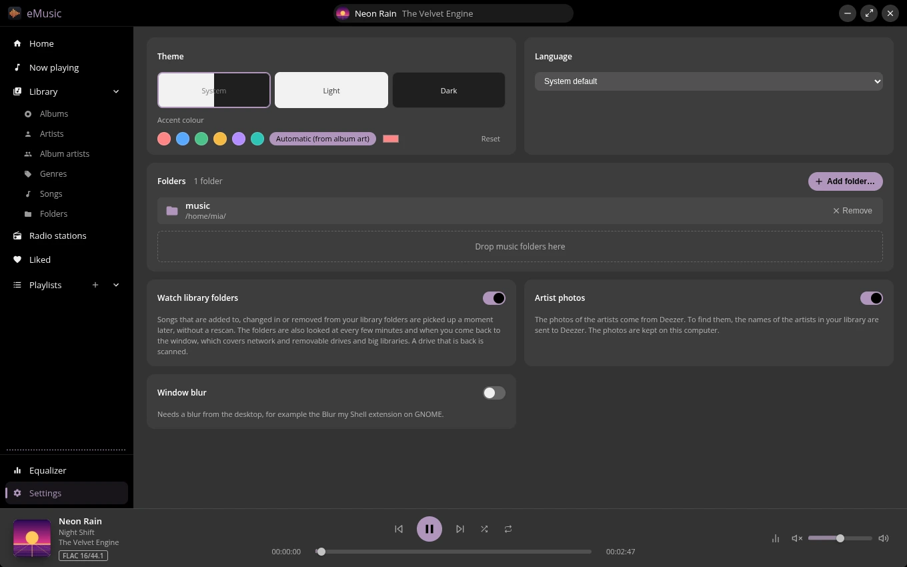
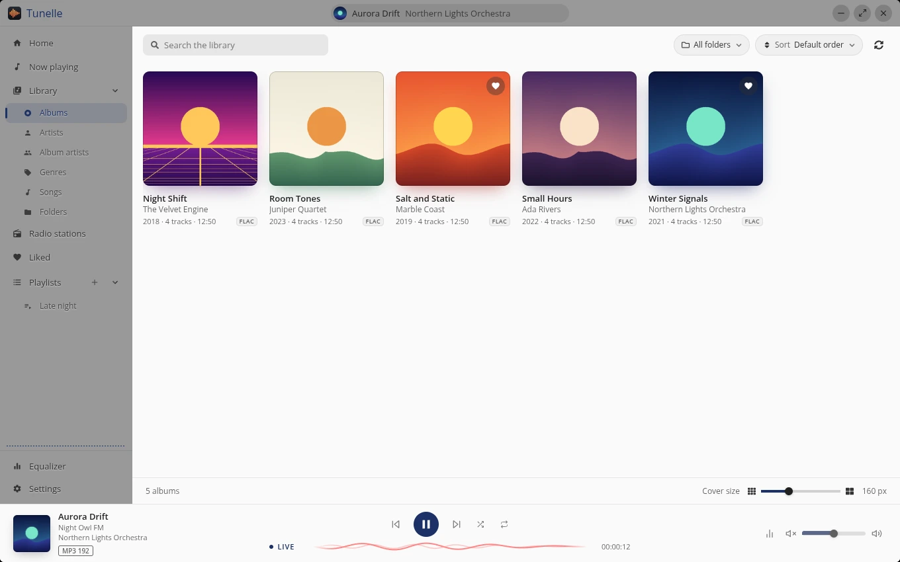

What you get
-
Your library, any way you browse
Albums, artists, album artists, genres, songs and folders. Search by artist, album or title, sort every list, and narrow it to the folders you pick.
-
Lossless, and you can see it
Every track and station wears its format: FLAC 16/44.1, FLAC 24/96, MP3 320. No guessing what you are listening to.
-
Plays what you have
FLAC, MP3, AAC and M4A, Ogg and Opus, WAV, AIFF, APE, WavPack and WMA, with the tags and the cover read from the files.
-
Internet radio built in
Thousands of stations from the open radio-browser.info directory, with their logos, filters and the song that is on right now. More about radio
-
A Home that remembers
Pick up where you stopped, replay what you heard last, and start your Liked tracks, a playlist or a favourite station in one click.
-
Liked and playlists
Heart a track, an album or a station and it waits in Liked. Build playlists, reorder them by dragging, and keep playing even when a folder is away.
-
An equalizer you can see
Ten bands drawn as a curve: drag a dot or pick Bass boost, Vocal, Treble boost or Loudness.
-
A queue you control
Add songs or whole albums, drag them into order, take out what you do not want. Shuffle and repeat are one tap away.
-
Light, dark, or your cover
Follow the system or choose a mode, then pick an accent colour, or let it follow the cover of whatever is playing.
-
Speaks your language
English and Hungarian, following your system unless you say otherwise.
-
Feels at home
Media keys and the media controls of your system, play buttons on the Windows taskbar, a menu entry on Linux, and a translucent window that blurs the desktop where the system allows.
-
Free, private, up to date
No price, no account, no tracking. Artist photos are off until you allow them. The app updates itself, and new releases come out twice a week, under the ISC licence.
A look around
Open it, and your music is waiting
Home keeps what you were doing: a button to continue the track you paused, the list of what you played lately and tiles for your Liked tracks, your playlists and your favourite stations. Clear the list whenever you like.

Every album, front and centre
A grid of covers that fills the window, with a slider for the size. Click a cover for the track list, a format badge on each track and a Play album button; sort by title, artist, year, length or number of tracks.

Artists, album artists and genres
Browse by who made it or what it is. Genres get a colour and a fan of covers; open one and press Play all or Shuffle to queue everything in it.

Everything you own, in one list
Every file in your folders with its artist, year, album, track number and format. Tick several songs and play just those. Open a folder once and the library keeps itself in step with it: files you add, change or remove show up a moment later, with no rescan.

Drop a folder in, or take one away
Drag folders onto the window or pick them, and watch the scan count its files. A copy of a whole album is one scan, not one per file, and you can turn the watching off in the Settings for a slow drive. A folder that is unplugged stays in the library as Unavailable, its tracks and favourites wait for it, and nothing on disk is ever touched.

What is playing, and what is next
The cover, the format and the whole queue sit on one page. Add songs or whole albums to the end of the queue, drag them into the order you want and take out what you do not. The player bar keeps the controls, the position and the volume in reach. Tracks follow each other without a gap, whether the queue is an album, a playlist or a shuffle, and they play at the same loudness when the files carry ReplayGain tags (per track or per album, or off in the settings).

Internet radio, next to your own music
Search the station directory by name, genre, country, language, codec or bitrate, and sort by popularity, name, bitrate, trending, votes or country, or by clicking a column. Stations show their logo, genres, codec, bitrate and country, a live badge tells you it is a stream, and the player bar shows the song that is on right now, with its cover.
The list reflows to a narrow window, dropping the least important columns first.

Heart it, and it is yours
Tracks, albums and stations land in one Liked page with a switch between Local and Online, a count of what is in it, Play all and Shuffle. Sort by when you liked it, by name or by artist.

Playlists, the quick way
Press the plus in the sidebar, name it, then add tracks or whole albums from any list. Drag playlists into order and drag the tracks inside one. Tracks whose files are away stay put and play again when they return.

Shape the sound
Ten bands from 70 Hz to 16 kHz, drawn as a curve you drag. Presets get you started, Faders show the numbers, Reset puts it flat again.

Make it yours
Light, dark or follow the system. Six accent colours, your own, or an automatic one that follows the cover of the song. Turn on translucent panels where your desktop blurs windows, switch the language, and decide if artist photos may be fetched.
The version and the update status live in the same place; the app checks on start and can check on demand.


Download
Pick your system. Not sure about the processor? Most computers made in the last years are the first choice of the list.
Linux: how to start the AppImage
- Make the downloaded file executable:
chmod +x eMusic-<version>-<arch>.AppImage, or tick "Allow executing as a program" in the file manager. - Start it with
./eMusic-<version>-<arch>.AppImageor by double click. - It needs FUSE 3: the
fuse3package gives thefusermount3helper, and desktop installs have it. Without FUSE, start it withAPPIMAGE_EXTRACT_AND_RUN=1 ./eMusic-<version>-<arch>.AppImage. - Version 26.10.2 and older also need FUSE 2 (
sudo dnf install fuse-libson Fedora,sudo apt install libfuse2t64on Ubuntu 24.04).
What is new in {{version}}
-
{{notes}}